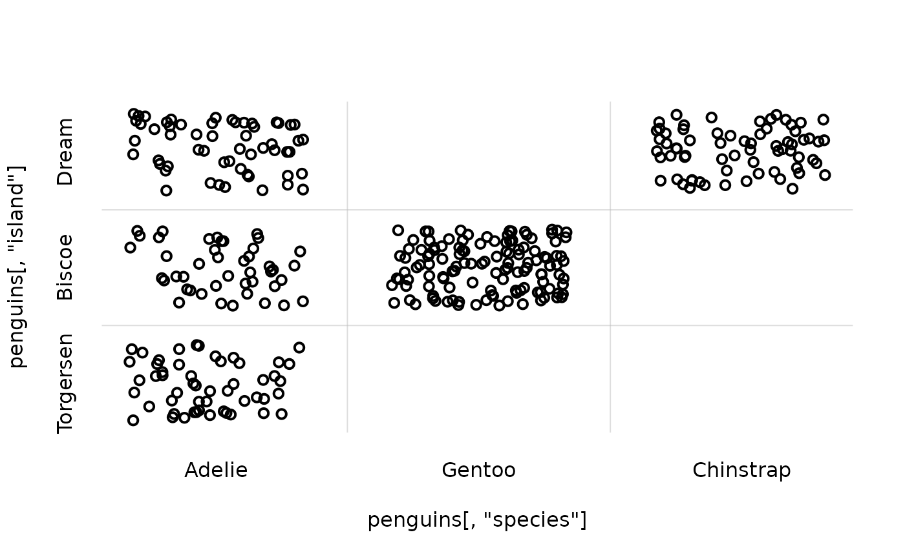
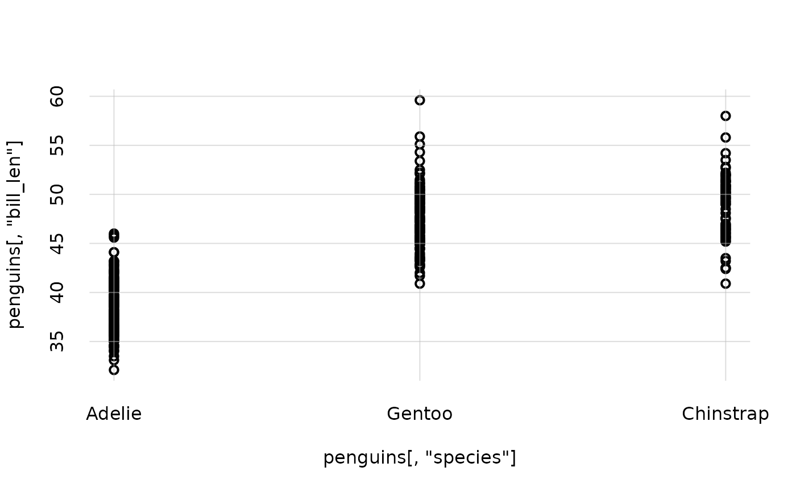
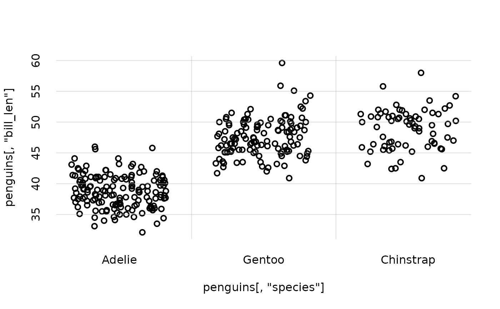
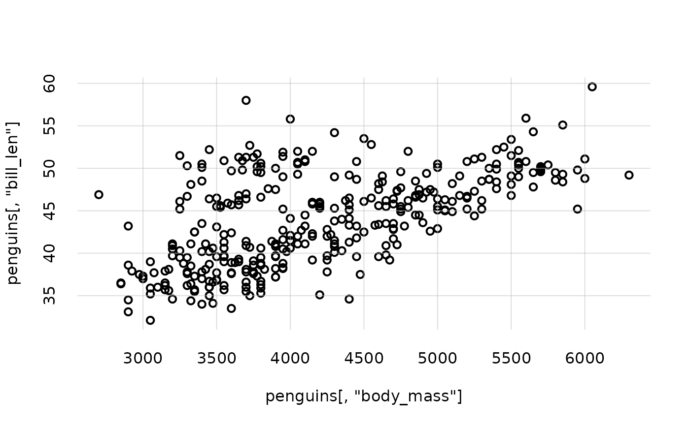
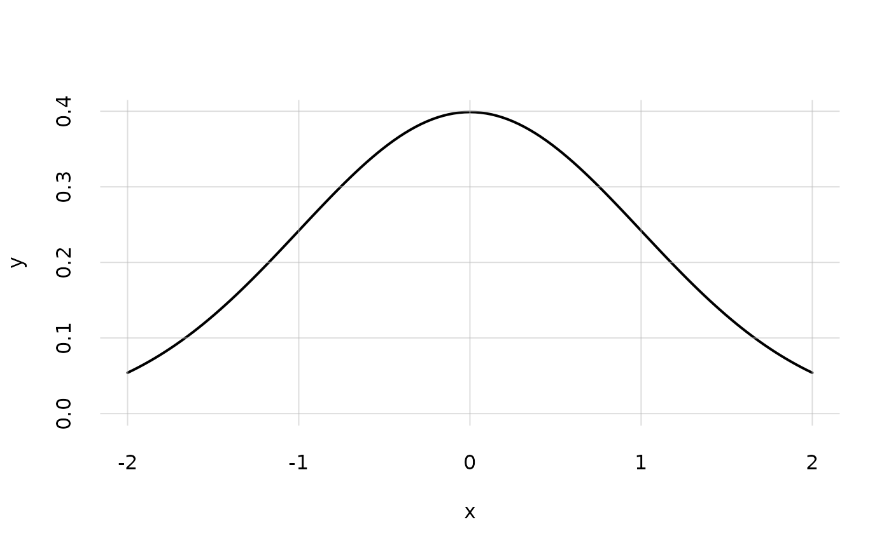

Plot function that modifies and expands the graphics package's graphics::matplot() function in several ways.
Arguments
- x
Numeric or character: vector of x-coordinates. If missing, a numeric vector
1:...is created having as many values as the rows ofy.- y
Numeric or character: vector of y coordinates. If missing, a numeric vector
1:...is created having as many values as the rows ofx.- type, lty, lwd, pch, col, xlab, ylab, add, cex.main
see analogous arguments in
graphics::matplot().- xlim, ylim
NULL(default) or a vector of two values. In the latter case, if any of the two values is not finite (includingNAorNULL), then theminormaxx- ory-coordinates of the plotted points are used.- xdomain, ydomain
Character or numeric or
NULL(default): vector of possible values of the variables represented in thex- andy-axes, in case thexoryargument is a character vector. The ordering of the values is respected. IfNULL, thenunique(x)orunique(y)is used.- alpha.f
Numeric, default 1: opacity of the colours,
0being completely invisible and1completely opaque.- xjitter, yjitter
Logical or
NULL(default): addbase::jitter()tox- ory-values? Useful when plotting discrete variates. IfNULL, jitter is added if the values are of character (or factor) class.- grid
Logical: whether to plot a light grid. Default
TRUE.- ...
Other parameters to be passed to
graphics::matplot().
Details
This function is essentially a wrapper around graphics::matplot(), augmenting the latter with some additional features useful for plotting data and results handled by Prova. Some of the additional features provided by flexiplot are the following:
Either or both
xandyarguments can be of classbase::character. In this case, axes labels corresponding to the unique values are used (see argumentsxdomainandydomain). This makes it easier to plot nominal and ordinal variates.A jitter can also be added to the generated points, via the
xjitterandyjitterswitches. This makes it easier to generate scatter plots of nominal and ordinal variates.It is possible to specify only a lower or upper limit in the
xlimandylimarguments, letting the other limit to be found automatically. This can be useful in plotting probabilities, in cases where we want to specify the lower,0limit, but want the upper limit to simply be the the maximum probability.Transparency of lines or markers can be specified through argument
alpha.f.The plotting style is different, and default argument
type = 'l'(line plot) rather thantype = 'p'(point plot).
See the package's vignettes for more examples.
See also
Pr() to calculate posterior probabilities and quantiles.
plot.probability() to directly plot posterior probabilities and quantiles contained in a probability object.
plotquantiles() to plot quantile ranges.
Examples
## Scatter plot of the 'island' vs 'species' nominal variates of the penguins dataset;
## note how jitter is automatically added:
flexiplot(x = penguins[, 'species'], y = penguins[, 'island'])

## Scatter plot of the 'bill_len' vs 'species' variates of the penguins dataset:
flexiplot(x = penguins[, 'species'], y = penguins[, 'bill_len'])

## We can add jitter to separate the nominal values:
flexiplot(x = penguins[, 'species'], y = penguins[, 'bill_len'],
xjitter = TRUE)

## Scatter plot of the 'bill_len' vs 'body_mass' variates;
## in this case we must specify the scatter-plot option `type = 'p'`:
flexiplot(x = penguins[, 'body_mass'], y = penguins[, 'bill_len'],
type = 'p')

## Calculate the values of a normal distribution in a restricted range
x <- seq(from = -2, to = 2, length.out = 127)
y <- dnorm(x, mean = 0, sd = 1)
## plot the distribution, with 0 as the lower plot range:
flexiplot(x = x, y = y, ylim = c(0, NA))
